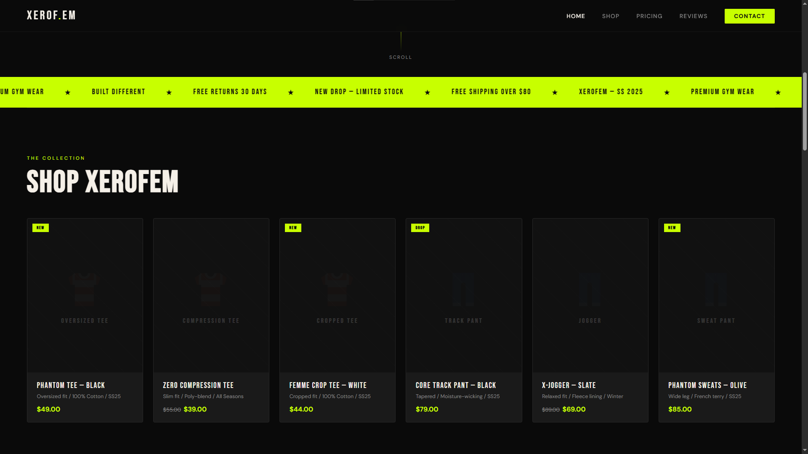

XEROFEM is my first complete project. XEROFEM is a modern gymwear landing designed and developed as my first complete front-end project using HTML and CSS.
The goal of the project was to create a premium fitness brand experience with strong visual identity, clean typography, responsive layouts,
and modern UI principles inspired by high-end commercial brands.
The website features a fully structured multi=section layout including a hero page, product showcase, pricing system, customer reviewas, and contact interface.
Special attention was given to spacing, color contrast, animations, hover interactions, and brand consistency, to create a professional, and immersive user experience.
This project marked the beginning of my journey into front-end developpment and helped me build foundaation skills in responsive web design, layout structuring,
CSS styling systems, and user focused interface design.
